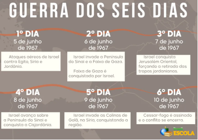

Guerra dos 6 dias (1967)
A Guerra dos Seis Dias foi um confronto armado entre Israel e Egito, Síria e Jordânia, ocorrido de 5 a 10 de junho de 1967. Esse conflito representou mais um episódio na longa série de tensões entre árabes e israelenses que se desenrolaram desde a criação de Israel. A guerra começou com um ataque surpresa de Israel ao Egito. Em seguida, o conflito também envolveu Síria e Jordânia, mas as forças israelenses prevaleceram sobre os três oponentes, conquistando várias regiões. Durante essa luta, Israel tomou a Faixa de Gaza, a Península do Sinai, Jerusalém Oriental, a Cisjordânia e as Colinas de Golã. Alguns desses territórios permanecem sob ocupação israelense até hoje.
